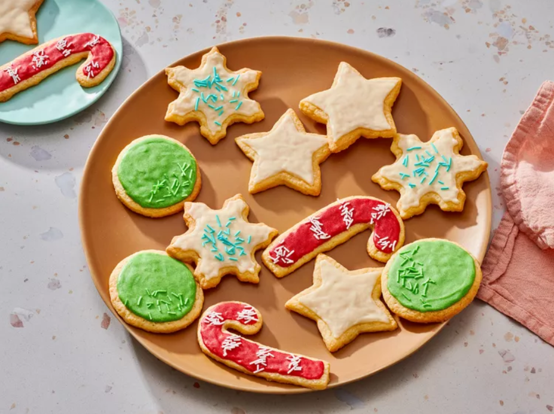

Home
Gluten-Free Sugar Cookie Recipe

Description
These gluten-free sugar cookies are easy to make with basic ingredients. Complete with a decadent cream cheese frosting, you'll come back to this gluten-free sugar cookie recipe again and again.
Ingredients:
- Gluten-free flour: Opt for an all-purpose gluten-free flour, as it can be substituted for regular all-purpose flour using a 1:1 ratio. Recipe creator SueAnne McInnis suggests Cup4Cup gluten-free multipurpose flour.
- Baking powder: Baking powder as a leavener, which means it helps the cookies rise.
- Salt: A pinch of salt enhances the other flavors, but it won't make your cookies taste salty.
- Sugars: You'll need white sugar for the cookies and confectioners' sugar for the icing.
- Butter: Unsalted butter goes into the cookie dough and into the 4-ingredient icing.
- Vanilla: You'll need two teaspoons of vanilla extract — one for the cookies, one for the icing.
- Eggs: Two large eggs add moisture and richness. Plus, they help bind the dough together.
- Cream cheese: The sweet, rich, tangy icing starts with softened cream cheese.
Steps
- Make the cookie dough: Whisk the dry ingredients together, then beat the wet ingredients together. Gradually stir the dry mixture into the wet mixture. Form the dough into a ball and chill in the fridge for about an hour.
- Roll, cut, and bake the dough: Roll the chilled dough out on a floured surface and cut with cookie cutters. Bake in the preheated oven until the edges begin to brown.
- Make the icing: Beat the cream cheese, butter, and vanilla together. Stir in the confectioners' sugar. Spread the icing on the cooled cookies.